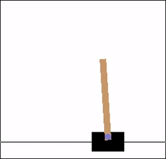
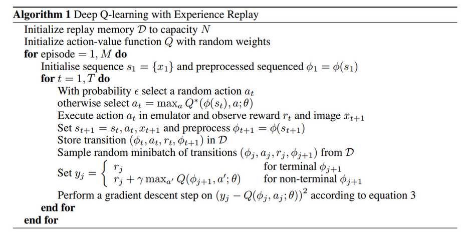

Reinforcement Learning
Table of Contents
1 Reinforcement Learning
1.1 MDP
1.1.1 MDP
| S | +1 | ||
|---|---|---|---|
| X | -1 | ||
- 假设有一个 agent 位于 S
- 它可以向四个方向移动
- 标注 X 的格子表示无法通过
- 有两个格子分别标注 +1 和 -1, 表示到达这个格子能得到的分数, 而且这两个格子是终 止状态, agent 到达两个格子后不再移动
- agent 向前移动时有 80% 的概率到达前方的格子, 各有 10% 的概率落在左右两侧的 格 子
- 问题是: 如何设定 agent 在各个格子前进的方向以便它能拿到最多的分数?
上面的格子移动问题是一个 MDP 问题, MDP 可以用一个五元组描述:
S
所有 state 的集合, 上例中有 11 个 state, 对应 agent 所在的格子
A
action 的集合, 表示 agent 使用的 action 的集合, 上例有 4 个 action: {上移, 下 移, 左移, 右移}
P
状态的转移概率, P 是 (s,a,s') 的函数, 表示在 s 状态时采用 a 动作后到达状态 s' 的概率, 上例中:
- P({0,0},{右移},{0,1})=0.8
- P({0,0},{右移},{1,0})=0.1
- P({0,0},{右移},{0,2})=0
gamma
gamma 是 MDP 的 discount factor, 后面计算 V, Q 时用到
R
R 表示 reward, 可以看作是 (s) 的函数, 表示 agent 从其它状态转移到 s 状态能得 到的 reward. 上例中:
- agent 到达 {0,4} 状态的 reward 是 +1
- agent 到达 {1,4} 状态的 reward 是 -1
- agent 到达 {1,3} 状态的 reward 是 0
1.1.2 policy
policy 表示 agent 在各个状态如何移动, 它是 (s) 的函数, 用 \(\pi(s)\) 表示
例如, 下面表示了一个 policy:
| > | > | > | +1 |
|---|---|---|---|
| ^ | X | ^ | -1 |
| ^ | < | < | < |
箭头表示 agent 在各个状态时移动的方向 (当然最终移动到哪个状态由 P 决定)
1.1.3 value function
\(V^{\pi}(s)\) 表示从 s 状态开始中, 按 \(\pi\) 指定的 policy, 到达终止状态时能得 到 reward 的累积值, 假设从 s0 开始, 经过 s1, s2, s3 到在终止状态 s_t, 则 \(V^{\pi}(s0)= R(s_1)+R(s_2)+R(s_3)+R(s_t)\)
在实际的 MDP 中, 计算 \(V^{\pi}(s)\) 时会考虑 \(\gamma\) 值, 变成 \(V^{\pi}(s0)= R(s_1)+\gamma R(s_2)+\gamma^2 R(s_3)+\gamma^3 R(s_t)\),
\(\gamma\) 表示未来的状态对 V 的值影响变小, \(\gamma\) 通过取值 [0,1]
1.1.4 bellman equation
上面的 \(V^{\pi}(s)\) 可以递归的定义为 \(V^{\pi}(s)=R(s')+\gamma V^{\pi}(s')\), 其中 \(s'\) 表示 \(s\) 转移到 \(s'\)
由于 MDP 的状态转移有一定的概率, 即 s 采用 a 时并不是确定的移动 s', 而是以一 定概率转移到 \(s', s'', \ldots\), 因此 \(V^{\pi}(s)\) 需要写成针对所有状态转移的 期望, 最终的公式为:
\(V^{\pi}(s)=\mathbb{E}\big(R(s')+\gamma V^{\pi}(s')\big)\), 或者 \(V^{\pi}(s)=\sum_{s'}P(s,a,s')[R(s')+\gamma V^{\pi}(s')]\)
上面的公式称为 bellman equation, 其基本形式为 \(V_t=r+\gamma V_{t+1}\)
1.1.5 value function 求解
以下面的 policy 为例:
| > | > | > | +1 |
|---|---|---|---|
| ^ | X | ^ | -1 |
| ^ | < | < | < |
令 \(\gamma=0.9\)
\(V^{\pi}(s_{0,0})=0.8*(0+0.9*V^{\pi}(s_{0,1}))+0.1*(0+0.9*V^{\pi}(s_{1,0}))\) \(V^{\pi}(s_{0,1})=0.8*(0+0.9*V^{\pi}(s_{0,2}))\) \(V^{\pi}(s_{0,2})=0.8*(1+0.9*V^{\pi}(s_{0,3}))+0.1*(0+0.9*V^{\pi}(s_{1,2}))\) \(V^{\pi}(s_{0,3})=0\)
\(V^{\pi}(s_{1,0})=0.8*(0+0.9*V^{\pi}(s_{0,0}))\) \(V^{\pi}(s_{1,2})=0.8*(0+0.9*V^{\pi}(s_{0,2}))+0.1*(-1+0.9*V^{\pi}(s_{1,3}))\) \(V^{\pi}(s_{1,3})=0\)
\(V^{\pi}(s_{2,0})=0.8*(0+0.9*V^{\pi}(s_{1,0}))+0.1*(0+0.9*V^{\pi}(s_{2,1}))\) \(V^{\pi}(s_{2,1})=0.8*(0+0.9*V^{\pi}(s_{2,0}))\) \(V^{\pi}(s_{2,2})=0.8*(0+0.9*V^{\pi}(s_{2,1}))+0.1*(0+0.9*V^{\pi}(s_{1,2}))\) \(V^{\pi}(s_{2,3})=0.8*(0+0.9*V^{\pi}(s_{2,2}))+0.1*(-1+0.9*V^{\pi}(s_{1,3}))\)
我们可以列出 11 个方程, 而一共有 11 个 V 需要求解, 所以可以直接解这个线性程组得 到所有的 \(V^{\pi}(s)\) (假设矩阵是满秩的…)
转换为矩阵形式为:
\(\setcounter{MaxMatrixCols}{11} \begin{bmatrix} 1&-0.72&0&0&-0.09&0&0&0&0&0&0\\ 0&1&-0.72&0&0&0&0&0&0&0&0\\ 0&0&1&-0.72&0&-0.09&0&0&0&0&0\\ 0&0&0&1&0&0&0&0&0&0&0\\ -0.72&0&0&0&1&0&0&0&0&0&0\\ 0&0&-0.72&0&0&1&-0.09&0&0&0&0\\ 0&0&0&0&0&0&1&0&0&0&0\\ 0&0&0&0&-0.72&0&0&1&-0.09&0&0\\ 0&0&0&0&0&0&0&-0.72&1&0&0\\ 0&0&0&0&0&-0.09&0&0&-0.72&1&0\\ 0&0&0&0&0&0&-0.09&0&0&-0.72&1\\ \end{bmatrix} * \begin{bmatrix}s0\\s1\\s2\\s3\\s4\\s5\\s6\\s7\\s8\\s9\\s10\\s11\\\end{bmatrix}= \begin{bmatrix}0\\0\\0.8\\0\\0\\-0.1\\0\\0\\0\\0\\-0.1\end{bmatrix}\)
import numpy as np w = np.matrix([ [1, -0.72, 0, 0, -0.09, 0, 0, 0, 0, 0,0], [0, 1, -0.72, 0, 0, 0, 0, 0, 0, 0,0], [0, 0, 1, -0.72, 0, -0.09, 0, 0, 0, 0,0], [0, 0, 0, 1, 0, 0, 0, 0, 0, 0,0], [-0.72, 0, 0, 0, 1, 0, 0, 0, 0, 0,0], [0, 0, -0.72, 0, 0, 1, -0.09, 0, 0, 0,0], [0, 0, 0, 0, 0, 0, 1, 0, 0, 0,0], [0, 0, 0, 0, -0.72, 0, 0, 1, -0.09, 0,0], [0, 0, 0, 0, 0, 0, 0, -0.72, 1, 0,0], [0, 0, 0, 0, 0, -0.09, 0, 0, -0.72, 1, 0], [0, 0, 0, 0, 0, 0, -0.09, 0, 0, -0.72, 1] ]) v = np.matrix([[0, 0, 0.8, 0, 0, -0.1, 0, 0, 0, 0, -0.1]]).T w.I.dot(v)
matrix([[0.46884845], [0.60898204], [0.84580838], [0. ], [0.33757088], [0.50898204], [0. ], [0.25989204], [0.18712227], [0.18053642], [0.02998622]])
| > | > | > | +1 |
|---|---|---|---|
| ^ | X | ^ | -1 |
| ^ | < | ^ | < |
若把 P({2,2}) 从向左修改为向上, 则结果为:
import numpy as np w = np.matrix([ [1, -0.72,0, 0, -0.09,0, 0, 0, 0, 0, 0], [0, 1, -0.72,0, 0, 0, 0, 0, 0, 0, 0], [0, 0, 1, -0.72,0, -0.09,0, 0, 0, 0, 0], [0, 0, 0, 1, 0, 0, 0, 0, 0, 0, 0], [-0.72,0, 0, 0, 1, 0, 0, 0, 0, 0, 0], [0, 0, -0.72,0, 0, 1, -0.09,0, 0, 0, 0], [0, 0, 0, 0, 0, 0, 1, 0, 0, 0, 0], [0, 0, 0, 0, -0.72,0, 0, 1, -0.09,0, 0], [0, 0, 0, 0, 0, 0, 0, -0.72,1, 0, 0], [0, 0, 0, 0, 0, -0.72,0, 0, -0.09,1, -0.09], [0, 0, 0, 0, 0, 0, -0.09,0, 0, -0.72,1] ]) v = np.matrix([[0, 0, 0.8, 0, 0, -0.1, 0, 0, 0, 0, -0.1]]).T w.I.dot(v)
matrix([[0.46884845], [0.60898204], [0.84580838], [0. ], [0.33757088], [0.50898204], [0. ], [0.25989204], [0.18712227], [0.40024387], [0.18817559]])
选择不同的 policy 时, \(V^{\pi}\) 结果不同, 强化学习的目标是找到一个 \(\pi^{\star}\), 使得 对所有 \(s\), \(V^{\pi^{\star}}(s)\) 都能达到最大.
1.2 value iteration
定义 \(V^{\pi^{\star}}(s)\) 为 \(V^{\star}(s)\), 为了求解 \(V^{\star}(s)\), 我们可以枚 举所有的 policy, 直到找到最优的 \(V^{\star}(s)\), 但 S 和 A 很大时, 这个方法不适用.
我们可以利用如下的公式来求解:
\(V^{\star}(s)=max_a \mathbb{E} [R(s')+\gamma V^{\star}(s')]\)
即 s 状态的所有 action 构成不同的分支, 从这些分支中选择目前最优的分支.
具体的算法是:
initialize V[s] to 0 or random value
loop until converge:
for each s:
for each a of s:
V[s]=max[E(R(s')+gamma*V(s'),V[s]]
可以证明 \(V\) 最终会收敛为 \(V^{\star}\)
有了 \(V^{\star}(s)\) 后, 从 \(V^{\star}(s)\) 可以推导出 \(\pi^{\star}(s)\):
\(\pi^{\star}(s)=argmax_a(V^{\star}(s))\)
1.3 policy iteration
value iteration 是对 \(V\) 进行 iteration 期望它收敛到 \(V^{\star}\), 然后从 \(V^{\star}\) 推导出 \(\pi^{\star}\)
通过 policy iteration, 可以直接求出 \(\pi^{\star}\)
policy iteration 算法:
initialize pi(s) to 0 or random value
loop until converge:
get V(s) by solving the linear equation
update pi(s) with argmax_a(V(s))
1.4 q-learning
若我们有 MDP 完整的模型 (主要是转移概率 P), 则可以使用 value iteration 和 policy iteration 来求解.
若我们无法得到转移概率, 可以使用 q-learning 求解.
q-learning 的主要思想是多次尝试, 以统计值代替转移概率.
定义 \(Q^{\pi}(s,a)=E(R(s')+\gamma V^{\pi}(s'))\), 即 Q 代表 s 状态采取 action a 能获得的 value
定义 \(Q^{\star}(s,a)=E\big(R(s')+\gamma max_{a'}[Q^{\star}(s',a')]\big)\), 即 s 状态采取 action a 能获得的最大 value
由于转移概率未知, 所有上面的公式无法使用 \(E\), q-learning 算法使用另一个公式近似 的代替它:
\(Q^{\star}(s,a)=\alpha Q^{\star}(s,a)+(1-\alpha) (R(s')+\gamma max_{a'}[Q^{\star}(s',a')])\)
其中 \(\alpha\) 是一个 (0,1) 范围的值
q-learning 算法:
initialize Q(s,a) to zero or random value
loop until converge:
select `s` randomly
loop until `s` is terminate_state:
choose action `a` by epsilon-greedy
feed (s,a) to the environment
get (s', r) from environment
update Q(s,a) = alpha * Q(s,a)+(1-alpha)(r+gamma*max_a'[Q(s',a')])
set s=s'
可以证明 \(Q(s,a)\) 最终会收敛到 \(Q^{\star}(s,a)\)
实现上, 可以使用一个二维数组表示 \(Q\),
1.5 DQN
q-learning 工作时我们用一个表格保存 Q 并对它进行迭代, 例如前面 MDP 例子中, S 大 小为 11, A 大小为 4, 所以 Q 是一个 11*4 的矩阵. 若 S 很大或者并不是由离散值构成, Q 无法用矩阵表示.
Q 本质上是一个 (s,a) 的函数, 而 deep learning 可以实现对任意函数的逼近, 所以可以 使用 ann 来实现 \(Q(s,a)\) 函数.
DQN (Deep Q Network) 是使用 ann 实现 q-learning 的网络
以 `使用 DQN 玩 cartpole 游戏` 为例:

cartpole 对应一个 MDP:
S
S 是游戏的任意时间的截图, 可以认为并不是离散值
A
A 有两个, `向左移动` 和 `向右移动`
P
P 未知
\(\gamma\)
自定义
R
可以设定为每坚持一帧, 都获得一个 reward, 即 \(R(s)=1\)
DQN 输入是游戏的截图, 实际上, 为了考虑运动的方向, 这里会将最近的几幅截图拼起来做 为输入
DQN 的输出是两个数, 分别代表 Q(s,"向左移动") 和 Q(s, "向右移动)
当 DQN 训练好后, 我们不断把当前截图交给 DQN, 它会返回两个方面移动时的 value, 然 后我们选择最大的 value 对应的方面移动即可.
1.5.1 DQN 算法
https://www.cs.toronto.edu/~vmnih/docs/dqn.pdf

DQN 算法与 q-learning 基本相同, 主要的不同点在于:
- 使用 deep learning 来更新 Q(s,a)
experience replay
we utilize a technique known as experience replay.
First, each step of experience is potentially used in many weight updates, which allows for greater data efficiency
Second, learning directly from consecutive samples is inefficient, due to the strong correlations between the samples; randomizing the samples breaks these correlations and therefore reduces the variance of the updates
Third, by using experience replay the behavior distribution is averaged over many of its previous states, smoothing out learning and avoiding oscillations or divergence in the parameters.
q-learning 算法中更新 Q 时的 E 不见了
Rather than computing the full expectations in the above gradient, it is often computationally expedient to optimise the loss function by stochastic gradient descent. If the weights are updated after every time-step, and the expectations are replaced by single samples from the behaviour distribution ρ and the emulator E respectively, then we arrive at the familiar Q-learning algorithm.